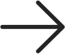

“Current enables our entire team to align, share work, and support
each other using
the tools we use every day. Weekly Drops help build momentum and
Streams
enable anyone to see what is happening elsewhere as our team and
product scales.”
Jonathan Simcoe
Senior Product Designer